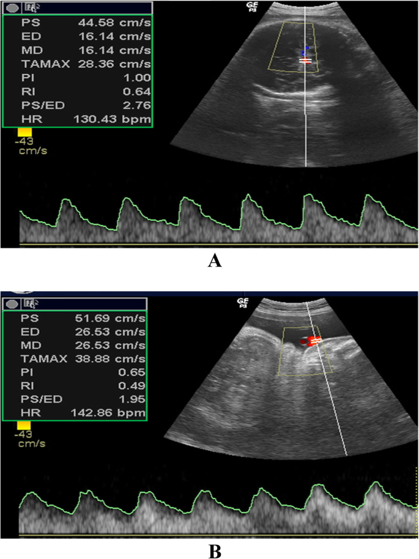

Página 14 · Sofrimento fetal crônico
A matemática da centralização: relação umbílico-cerebral
A banca te dá dois números e nenhuma palavra. Como enxergar a centralização na conta?
A relação umbílico-cerebral maior ou igual a 1
A relação umbílico-cerebral ≥ 1. Na centralização, a resistência da umbilical subiu e a da cerebral média caiu. Um número grande dividido por um número pequeno dá maior ou igual a 1 — é a relação umbílico-cerebral ≥ 1. Simples assim: a conta traduz o que o texto chamaria de “centralizou”.
Número grande ÷ número pequeno
Número grande ÷ número pequeno. Pense na direção das duas resistências. A umbilical (grande) em cima, a cerebral (pequena) embaixo. Grande sobre pequeno cresce — cruza o 1. Se as duas estivessem normais, a umbilical (baixa) sobre a cerebral (alta) daria menos que 1.
umbilical (grande)
cerebral (pequeno)
Interativo: ajuste os S/D e veja a razão cruzar o 1.
Umbilical (resistência alta, “grande”) sobre cerebral (resistência baixa, “pequeno”): quando a razão cruza o 1, indica centralização. É a mesma centralização, disfarçada em conta.O exemplo 3 ÷ 1
O exemplo 3 ÷ 1. Concretize com o exemplo: relação sístole/diástole da umbilical = 3 e da cerebral média = 1 → 3 ÷ 1 = 3 (≥ 1). Centralização demonstrada matematicamente, sem que a banca escreva a palavra.
Calculadora da relação umbílico-cerebral · AU ÷ ACM
Âncora: 3 ÷ 1 = 3 (≥ 1) → centralização. Se a umbilical já supera a cerebral, a razão já é ≥ 1.
O atalho — nem precisa fazer a conta
O atalho — nem precisa fazer a conta. E há um atalho ainda mais rápido: se a resistência da umbilical já está maior que a da cerebral média, a razão já é ≥ 1 — nem é preciso fazer a divisão. Comparar os dois números basta.

Painel A: cerebral média (PI 1,00; S/D 2,76). Painel B: umbilical (PI 0,65; S/D 1,95). A banca dá dois números para você integrar — resistência placentária × redistribuição cerebral. É o cenário “divida os dois”.
Zytoon AA et al. Egyptian J Radiol Nucl Med 2019;50:112 · fonte / licença: CC BY 4.0
É a mesma centralização, disfarçada
É a mesma centralização, disfarçada. No fundo, a relação umbílico-cerebral é só outra forma de a banca apresentar a mesma centralização — dando as duas resistências para você dividir. Reconhecer o disfarce é metade da questão.
O parâmetro que aparece no laudo é a CPR — relação cerebroplacentária = IP-ACM ÷ IP-AU, anormal quando < p5. É o recíproco (inverte numerador e denominador) da “umbílico-cerebral ≥ 1” e costuma ser mais sensível — flagra a centralização antes de a razão simples cruzar 1. Para a prova, o atalho ≥ 1 resolve; o nome formal é CPR < p5.
Quiz — fixação
S/D da umbilical = 3 e S/D da cerebral média = 1. O que a relação umbílico-cerebral indica?
- Gabarito A. Umbilical (grande) sobre cerebral (pequeno) ≥ 1 = centralização.
- B inverte a divisão (esse é o formato da CPR, cujo anormal é < p5 — e 0,33 baixo justamente indicaria centralização, não “normal”).
- C a razão simples S/D dispensa o percentil para o atalho.
- D a relação fala de redistribuição de fluxo, não de volume de líquido.
Sobre a relação umbílico-cerebral, assinale a correta.
- Gabarito A. É a mesma centralização em forma de conta; umbilical > cerebral já dá ≥ 1.
- B não é fenômeno distinto — é o disfarce numérico do mesmo.
- C justamente quando a umbilical está alterada (alta) a razão sobe.
- D não há exigência de “> 10”; o corte é ≥ 1.